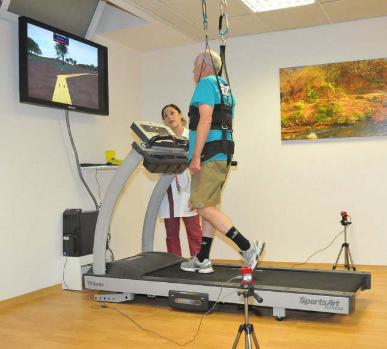
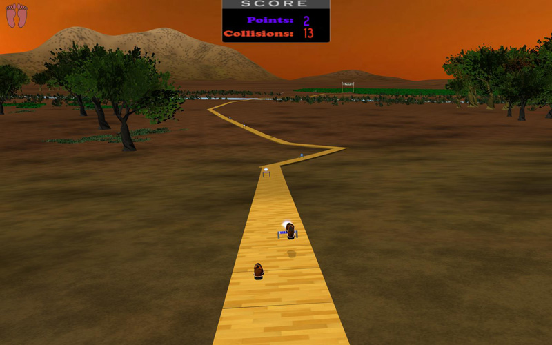

Feet : VR System
Feet is a Virtual Reality (VR) system that I developed in cooperation with the Tel Aviv Sourasky Medical Center, in order to examine the effect of an obstacle course simulation on the gait of patients with Parkinson's disease. Today this system is being used as an alternative clinical treatment for Parkinson's disease patients in the Tel Aviv Sourasky Medical Center.
 Parkinson's disease (PD) patients have difficulties in walking. Their gait is characterized by slow speed , small steps, and low clearance of the feet from the floor, which increases their risk for falling. In addition, patients with PD also suffer from episodic walking disorders such as freezing of gait. The VR system was developed in cooperation with researchers in the Gait and Neurodynamics Laboratory at Tel Aviv Sourasky Medical Center. The goal of the project was to provide a VR system that will be used in a research that examines the effect of VR on the gait of patients with PD.
The research was conducted in 2010 and showed outstanding results. Patients demonstrated improvements in speed, step length, clearance and the ability to navigate between obstacles. The results of this study were published in the Journal of Geriatrics Biomedical Science in 2011 (paper).
 The system tracks the patient's feet and displays his movement as a pair of shoes on the virtual obstacle track, making the patient aware of his gait performance in real time. The system also provides auditory and visual feedback as to the patient success in overcoming the obstacles. Cognitive challenges, such as memorizing the way to the end point, are also given to the patient during the training. I used the open-source graphics engine Ogre3D and two OptiTrack V100 IR cameras for motion capture.
This system started as a final project in my undergraduate studies in the Shenkar College of Engineering and Design.
"In his final project, Gal demonstrates an exceptional ability in the planning and the implementation of an idea, as well as in the design and execution of a project. The virtual reality system that he developed in this project attests not only to his technological knowledge, but also to his unique personality, his creativity, and original thinking.
Over the last few years we have regularly invited Gal to present this system to our new students, as well as to the board of trustees.
This project serves as an inspiration to our students at Shenkar."
Prof. Yuli Tamir
President, Shenkar College
Formerly, Minister of Education